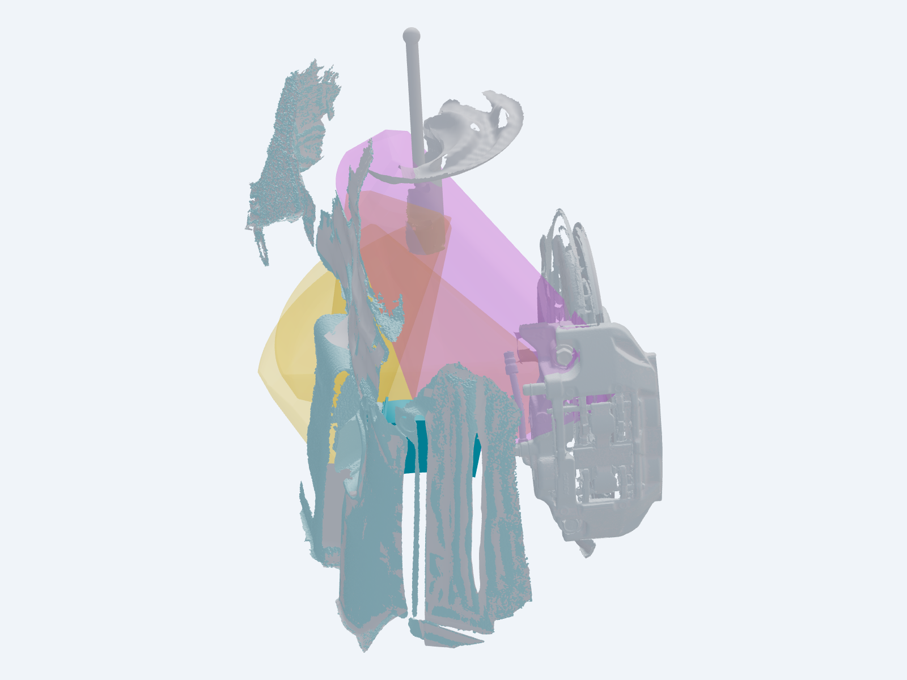

Mounting & shape
Accepted scan scale and Corolla mounting recipe retained. The shortened terminal resolves the predecessor’s modelled opposite-lock contacts. A meaningful edit passes STEP export and reopening.
2023 GR COROLLA CIRCUIT · FRONT LEFT
V1 closed · V2 in progress · 23 October 2026
The arm-mounted scoop and body-fixed shroud now have editable first candidates. Their remaining fit and air-path checks are shown clearly. The completed practical V1 model is preserved below.
Finished: the rough digital packaging model.
Still unverified: physical fit, wheel/tire clearance and cooling performance.
CLOSED PRACTICAL MODEL / V1

Approximate straight-ahead pose. The suspension remains hanging.
Yellow = CV/link reservations. Purple = inferred hydraulic-hose planning space, not a cooling hose. Interactive steering uses the lighter partial CAD assembly; still images include dense scan context. The full original scan remains preserved locally.
WHAT “COMPLETE” MEANS
Accepted scan scale and Corolla mounting recipe retained. The shortened terminal resolves the predecessor’s modelled opposite-lock contacts. A meaningful edit passes STEP export and reopening.
19 sampled steering positions: 931 native CAD part/pose checks and 76 dense scan region/pose checks show separation from V1. These are model checks, not measured vehicle clearances.
Nine geometric rays reach captured rotor surfaces without first hitting the included liner, caliper or shield. This supports the direction, not cooling performance or hidden vane entry.
Original scan, captured pose and predecessors retained. Steering pivots, upper strut fill and hose routing are labelled estimates. The existing fixing heads are assumed removed and refitted over the mounting ears.
REFERENCE LIBRARY
The numbered examples and your browser-saved review controls are retained. V1 is closed; V2A and V2B are active. V3/V4 are indexed for later work.